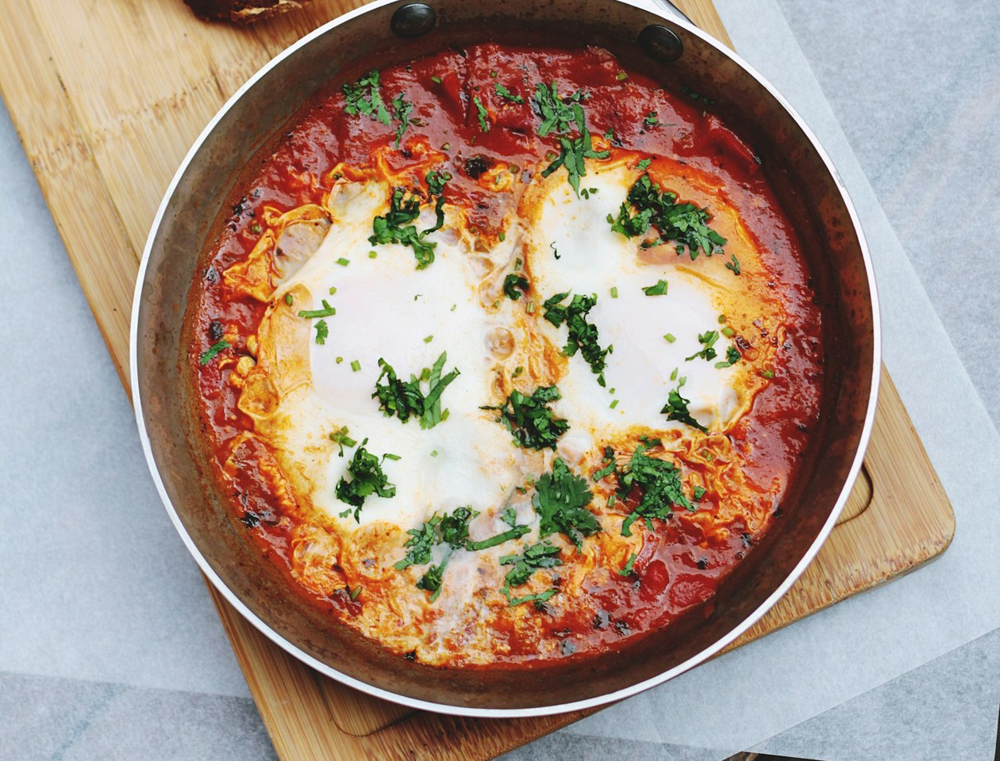
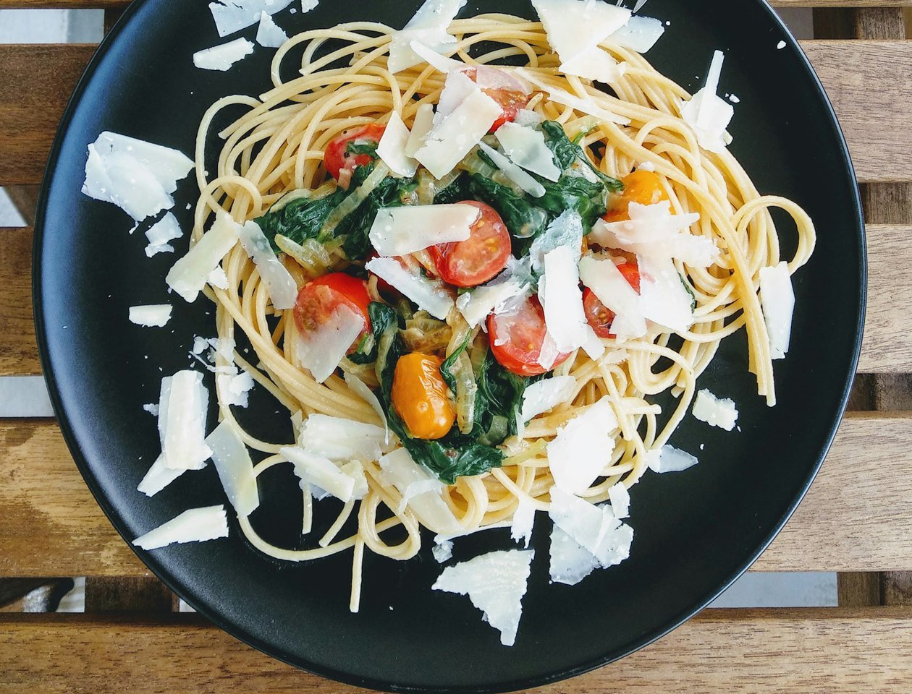

A pantry that fills itself and tells you what to cook.
Photograph a grocery receipt and Pantry reads what you bought, works out how long it lasts, and deals you dishes you can make right now, ordered by what is expiring first.

Shakshuka
Chicken fried rice

Spinach & garlic pasta
How it works
Receipt in, pantry out, dinner on screen.
-
Scan a receipt
Photograph the receipt from your grocery run. Pantry reads the items, quantities, prices and the purchase date, so “GV MLK 1GAL” becomes “Milk, 1 gal”. Non-food lines are set aside, not deleted.
GV MLK 1GAL3.48 Milk, 1 galPAPER TOWELS 6RL7.97 Set aside -
Your pantry runs itself
Every item gets an estimate of how long it lasts in a normal household and when it goes bad. The inventory drains on its own over time, so nobody logs anything. When an estimate hits zero, Pantry asks “Still have this?” instead of guessing, and buying the same thing again corrects the estimate.
Spinach5 oz 2 days leftMilk1 gal 6 days leftJasmine rice2 lb 3 months left -
Swipe to dinner
From what is in the pantry, Pantry generates dishes you can make right now, ordered by what is expiring first. Swipe right to cook, left to skip. “I made this” takes the ingredients out, and you can untick anything you skipped.
Spinach5 oz usedGarlic2 cloves usedParmesan1 oz skipped
What makes it different
-
Nothing to log
The pantry fills from your receipts and drains on its own over time. You never type in what you bought or what you used.
-
Expiring first
Dishes are ordered by what is going bad soonest, so the thing with two days left is the first thing on the deck.
-
Honest about uncertainty
Shelf lives are estimates. When one hits zero, Pantry asks “Still have this?” instead of guessing, and buying the same thing again corrects the estimate.
Dinner is already in your pantry.
Scan one receipt and see what you can make tonight.